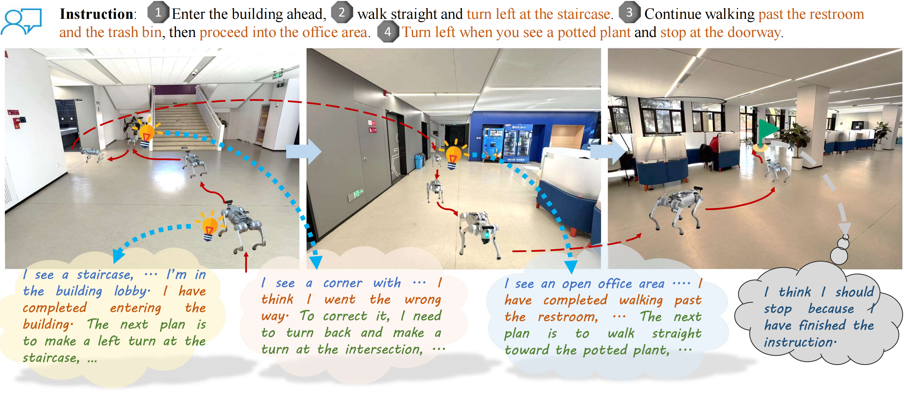
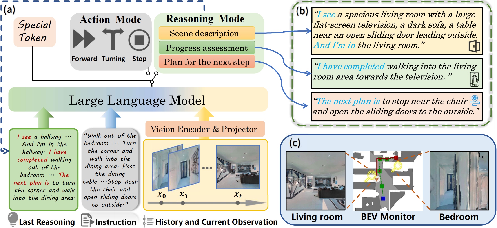
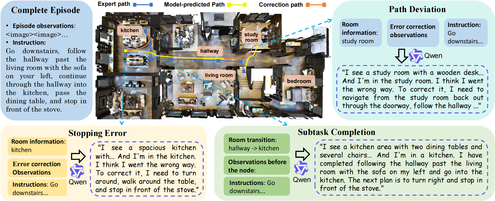
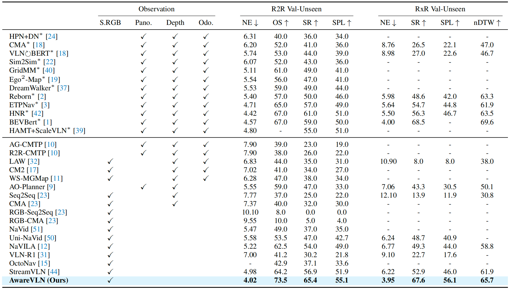
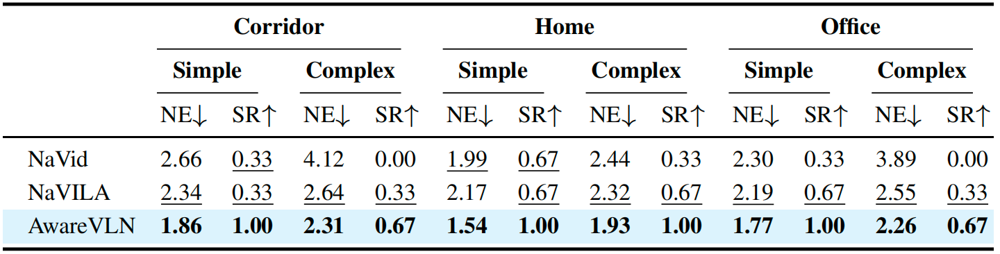
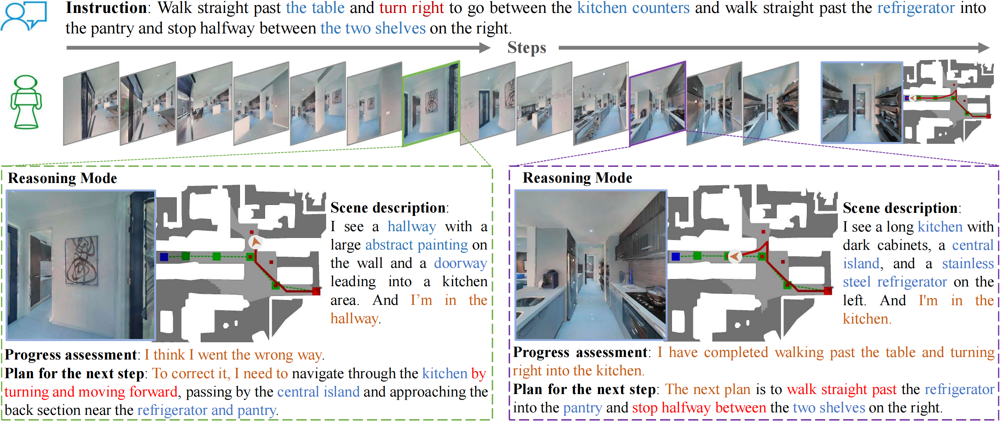
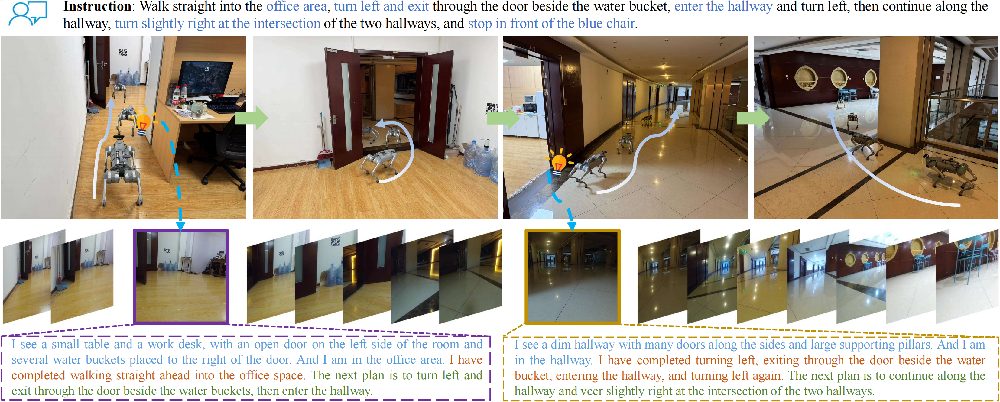

CVPR 2026
[REASON] and [ACT], producing structured reflections (scene context, progress, next plan) that condition later control with relative step cues from the last reasoning step.We visualize representative navigation episodes in simulation and in the real world: the model performs structured reasoning during navigation—for example, detecting a misinterpreted turn and issuing a corrective plan, or recognizing a completed subtask and planning the next phase aligned with the instruction.
If the video does not load, click HERE to download.
Vision-and-Language Navigation (VLN) requires an agent to ground language instructions to its own movement within a visual environment. While state-of-the-art methods leverage the reasoning capabilities of Vision-Language Models (VLMs) for end-to-end action prediction, they often lack an explicit and explainable understanding of the relationships between the agent, the instruction, and the scene. Conversely, explicitly building a scene map for heuristic planning is intuitively appealing but relies on additional 3D sensors and hinders large-scale vision-language pre-training. To bridge this gap, we propose AwareVLN, a novel framework that equips the navigation model with a self-aware reasoning mechanism, enabling it to understand the agent's state and task progress in a fully end-to-end and data-driven manner. Our approach features two key innovations: (1) a structural reasoning module that fosters spatial and task-oriented self-awareness, and (2) an automatic data engine with progress division for effective training. Extensive experiments on various datasets in the Habitat simulator show that our AwareVLN significantly outperforms previous state-of-the-art vision-language navigation methods.

AwareVLN triggers structured, self-aware reasoning at key nodes (e.g., subtask boundaries) rather than relying solely on end-to-end action prediction.
Unified reason–act framework. A single VLM jointly predicts a mode token ([REASON] vs [ACT]) and text: sparse reasoning summarizes scene context, progress, and next-step plans; action mode parses movement commands into low-level primitives. Past reasoning and relative step distance from the last reasoning step are fed back for temporal grounding.

Automatic data engine. Key reasoning nodes (subtask completion, path deviation, stopping error) are detected automatically using simulator semantics and ground-truth waypoints; a general VLM generates structured supervision at scale without manual annotation.

Simulation. We evaluate on R2R-CE and RxR-CE (Val-Unseen) in Habitat with monocular RGB. AwareVLN achieves strong results without depth, panoramas, or odometry, compared with methods that may use richer sensing or simulator pre-trained waypoint predictors.

Real-world evaluation. We report navigation error and success rate across corridor, home, and office settings with simple vs. complex instructions.

Qualitative rollouts. Examples in Habitat and on a real quadruped show self-correction after misinterpreting an instruction and progress-aware re-planning at subtask boundaries.

Habitat: deviation recovery and subtask-aware planning.

Real world: long-horizon task with reasoning at subtask boundaries (sim-trained only).
© Wenxuan Guo | Last update: May 22, 2026